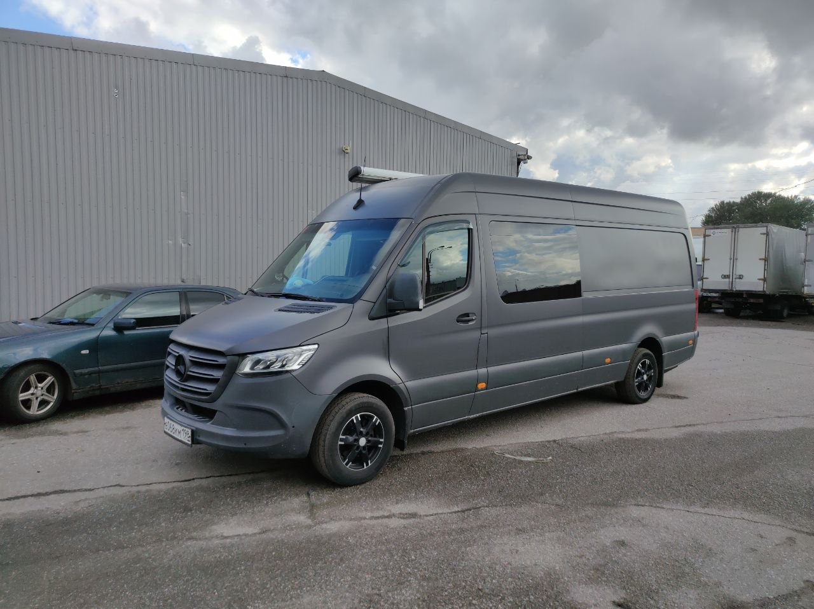

Блог Авто Геометрия
Наши работы, полезные статьи и новости сервиса
Наши работы
Отчёты о выполненных ремонтах — кликните, чтобы посмотреть подробнее

Восстановление геометрии на стапеле
BMW 3 Series • март 2026🔨
Переварка порогов и арок
Toyota Camry • февраль 2026🎨
Покраска элемента
Kia Rio • февраль 2026🚗
Восстановление после ДТП
VW Tiguan • январь 2026🛡️
Антикоррозийная обработка
Mercedes C-Class • январь 2026🚙
Ремонт рамного авто
Toyota Land Cruiser • декабрь 2025Полезные статьи
Советы по кузовному ремонту, покраске и уходу за авто
📝
10 марта 2026
Как понять, что пора менять пороги
Признаки коррозии и когда уже нужна переварка, а не косметика
📝
2 марта 2026
Антикор: когда делать и почему не поздно весной
Разбираем, как антикоррозийка продлевает жизнь кузову на 5–7 лет
📝
20 февраля 2026
Что такое геометрия кузова и зачем её проверять
Как деформация кузова влияет на управляемость и износ шин
Новости сервиса
Акции, обновления оборудования и события
📰
1 марта 2026
Скидка 15% на антикоррозийную обработку
Весенняя акция для всех клиентов — до конца марта
📰
15 февраля 2026
Новое оборудование: обновили стапель
Теперь восстанавливаем геометрию ещё точнее и быстрее
📰
1 февраля 2026
Расширили покрасочную камеру
Теперь можем красить внедорожники и микроавтобусы целиком